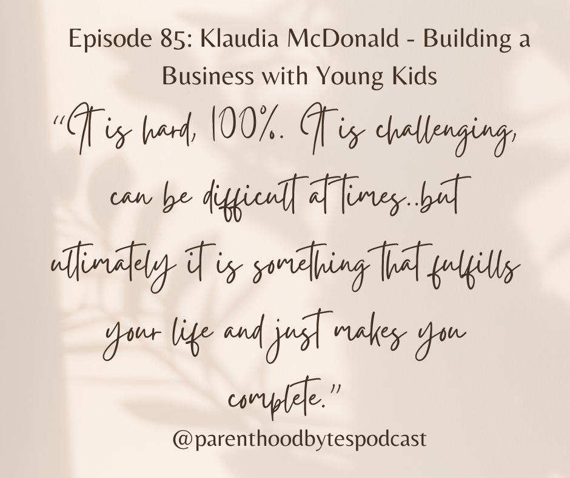

Episode 85: Klaudia McDonald - Building a Business with Young Kids

Episode Notes
In this episode, we welcome back Klaudia McDonald for a second conversation. Klaudia first joined us to share her journey into tech, and today she returns to talk about building her business while raising two young kids and navigating international moves.
We dive into what it really looks like to pursue entrepreneurship in the midst of early parenthood - from ruthless prioritization to time management strategies that allow her to get things done within tight windows. Klaudia speaks candidly about the challenges, tradeoffs, and fulfillment that come with carving out a path that aligns with both professional goals and family life.
▶️ Tune in to hear more about Klaudia's inspiring journey!
💡Check out www.boboapp.app to learn more about the Bobo App!
📣 If you or someone you know, has experience as a parent in tech and would like to share your story, ➡️ email me at chiao@parenthoodbytes.co!
✨Interested in sponsoring an episode? ➡️ Email me at chiao@parenthoodbytes.co!